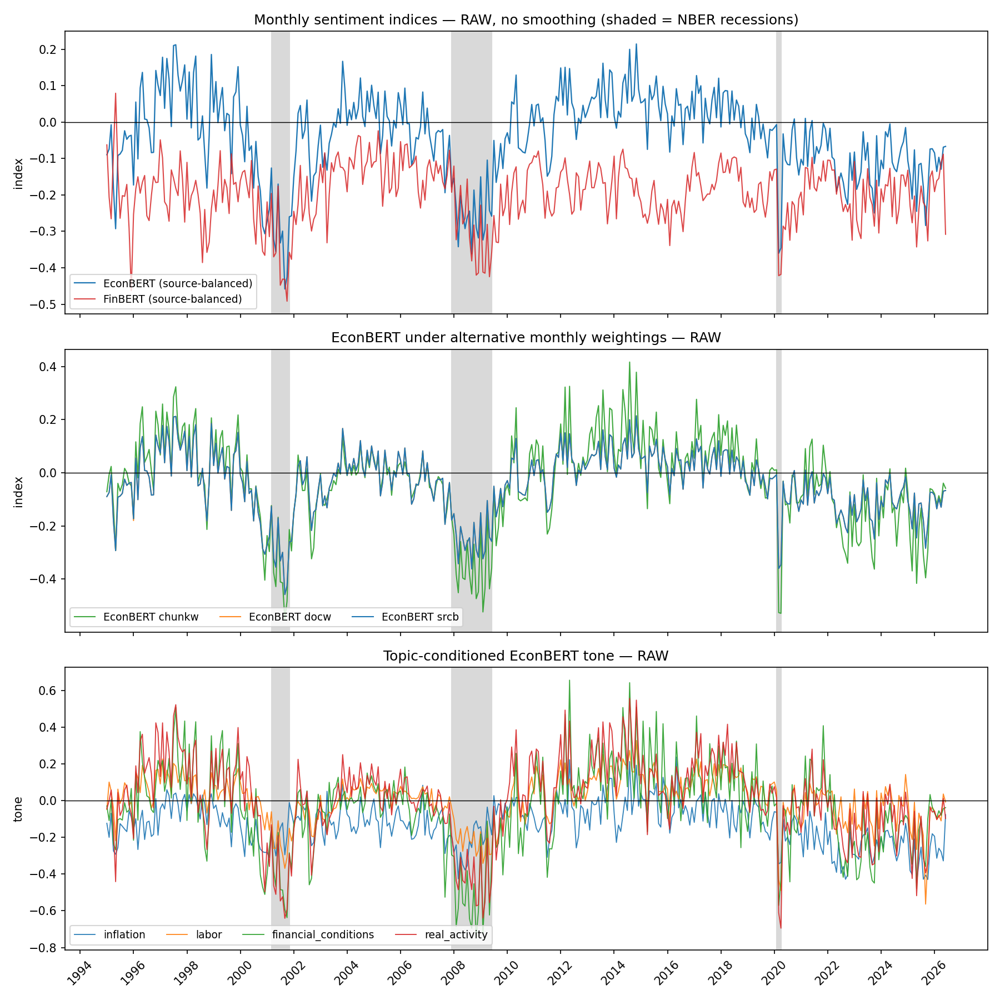

Domain corpus
Federal Reserve, BLS, and Census narratives anchor the model in official economic language.
02 / EconBERT
General sentiment models often confuse cautious wording with bad economic news. EconBERT instead asks what a passage implies for macroeconomic conditions—so easing inflation pressure can be positive even when the prose sounds restrained.
Try the interactive examplesFederal Reserve, BLS, and Census narratives anchor the model in official economic language.
Pre-2013 passages receive positive, neutral, or negative macro-direction labels.
A compact DistilBERT student learns the task, then remains frozen out of sample.
Passage scores become source-balanced monthly measures suitable for forecast evaluation.
Why domain-specific tone?
EconBERT is designed around economic interpretation rather than everyday affect. It separates what a document sounds like from what its information implies for growth, inflation, labor markets, or financial conditions.
The resulting passage-level probabilities are aggregated into monthly narrative indices and evaluated in genuinely real-time forecasting settings, alongside macroeconomic data vintages and professional forecasts.
Research visualization
The figure keeps the model comparison and topic-conditioned measures while omitting the alternative-monthly-weightings panel.

Research interests